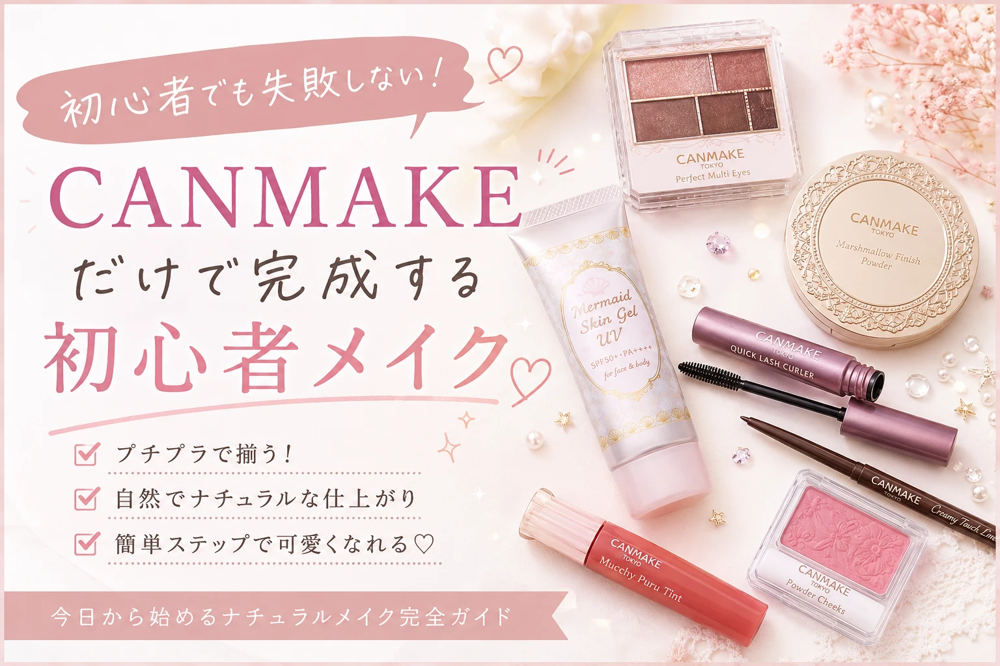

「メイクを始めたいけれど、何を買えばいいか分からない…」 「できるだけお金をかけずに可愛くなりたい！」 そんなメイク初心者の方へ向けて、 本記事では1000円以内でも始めやすいプチプラメイクを紹介します。
最近ではドラッグストアやバラエティショップで、 高品質なのに手頃な価格のコスメが数多く販売されています。 メイク初心者だからといって、 最初から高価なコスメを揃える必要はありません。
大切なのは、 自分に合ったアイテムを少しずつ揃え、 毎日楽しくメイクを続けることです。
プチプラだけで始める、 ナチュラルで可愛い垢抜けメイク。

「メイクを始めたいけれど、何を買えばいいか分からない…」 「できるだけお金をかけずに可愛くなりたい！」 そんなメイク初心者の方へ向けて、 本記事では1000円以内でも始めやすいプチプラメイクを紹介します。
最近ではドラッグストアやバラエティショップで、 高品質なのに手頃な価格のコスメが数多く販売されています。 メイク初心者だからといって、 最初から高価なコスメを揃える必要はありません。
大切なのは、 自分に合ったアイテムを少しずつ揃え、 毎日楽しくメイクを続けることです。
最初に買うべきアイテムを分かりやすく紹介します。
予算を抑えながらメイクを楽しむ方法を紹介します。
ナチュラルで清潔感のある印象を作るポイントを解説します。
初めてメイクを始める場合、 いきなり高価なデパコスを揃える必要はありません。 最近のプチプラコスメは品質が非常に高く、 ドラッグストアでも人気ブランドの商品を手軽に購入できます。
「自分に似合う色」 「使いやすいアイテム」 を見つけるためにも、 最初は価格を抑えて様々なコスメを試してみることがおすすめです。
毎日使うものから少しずつ揃えていけば、 無理なくメイクを始められます。
| アイテム | 優先度 | 目安価格 |
|---|---|---|
| 日焼け止め | ★★★★★ | 300〜700円 |
| BBクリーム | ★★★★★ | 500〜900円 |
| フェイスパウダー | ★★★★☆ | 500〜800円 |
| アイブロウ | ★★★★★ | 300〜600円 |
| リップ | ★★★★★ | 300〜700円 |
| アイシャドウ | ★★★★☆ | 500〜900円 |
メイク用品をすべて新品で揃える場合、 合計1000円以内に収めるのは難しいこともあります。
そのため初心者の方には、 まずは「BBクリーム」と「リップ」など、 必要最低限のアイテムから購入することをおすすめします。
少しずつ買い足していくことで、 無理なく理想のメイクセットを完成させられます。
プチプラコスメは種類が豊富ですが、 初心者は使いやすく品質が安定しているブランドから選ぶのがおすすめです。
初心者人気No.1。 発色が自然で失敗しにくく、 可愛いパッケージも魅力です。
コスパ抜群。 ベースメイクからポイントメイクまで 幅広く揃えられます。
シンプルで使いやすく、 学生やメイク初心者にも人気があります。
アイブロウやアイシャドウが人気。 少し大人っぽいメイクにも挑戦できます。
肌の色ムラや毛穴を自然にカバーできます。 化粧下地・ファンデーション・日焼け止めが 一つになっている商品も多く、 初心者には特におすすめです。
眉毛を整えるだけでも顔の印象は大きく変わります。 ペンシルタイプは初心者でも扱いやすいでしょう。
ナチュラルなピンクやベージュ系を選ぶと、 学校や普段使いでも自然な印象になります。
ブラウン系やベージュ系は失敗しにくく、 初心者でも簡単に立体感のある目元を作れます。
メイクは一度に全部揃える必要はありません。 毎月1〜2個ずつ買い足していくだけでも、 数か月後には十分なメイクセットが完成します。
「まずは使ってみる」という気持ちで、 無理なく楽しみながら始めてみましょう。
プチプラコスメは種類が豊富なので、 「どれを選べばいいか分からない」と悩む方も多いでしょう。 まずは人気があり、多くの初心者から支持されている 定番アイテムを選ぶと失敗しにくくなります。
ナチュラルな仕上がりを目指すなら、 厚塗りをせず薄く伸ばすことがポイントです。
最初はブラウン系カラーを選ぶことで、 自然な目元になり失敗しにくくなります。
保湿力の高いリップを選ぶことで、 唇の乾燥を防ぎながら自然な血色感を演出できます。
プチプラコスメはドラッグストアや バラエティショップだけでなく、 オンラインショップでも購入できます。
最初から全て揃えようとすると、 使わないコスメが増えてしまいます。
SNSで人気の商品でも、 自分の肌質や好みに合うとは限りません。
厚塗りは崩れやすくなる原因になります。 少量ずつ重ねることを意識しましょう。
最初はBBクリーム・アイブロウ・リップの3つがおすすめです。 この3つだけでも顔全体の印象が明るくなり、自然な垢抜け感を演出できます。
必要ありません。 少しずつ買い足していく方が、自分に合うアイテムを見つけやすく、 無駄な出費も抑えられます。
学校のルールを確認した上で、 休日やお出かけの日にナチュラルメイクを楽しむ方も多くいます。 色付きリップや日焼け止めから始めるのもおすすめです。
最初はプチプラコスメで十分です。 メイクに慣れてきたら、自分に合うアイテムを少しずつ追加していきましょう。
メイクは一度で完璧にできるものではありません。 毎日の積み重ねによって、自分に似合うメイクやコツが少しずつ分かってきます。
メイク初心者は、最初から高価なコスメを揃える必要はありません。 プチプラコスメでも十分にナチュラルで可愛いメイクを楽しめます。
まずはBBクリーム・アイブロウ・リップなど、 基本となるアイテムから少しずつ揃えていきましょう。
大切なのは「高いコスメを使うこと」ではなく、 自分に合ったメイク方法を見つけて楽しむことです。

